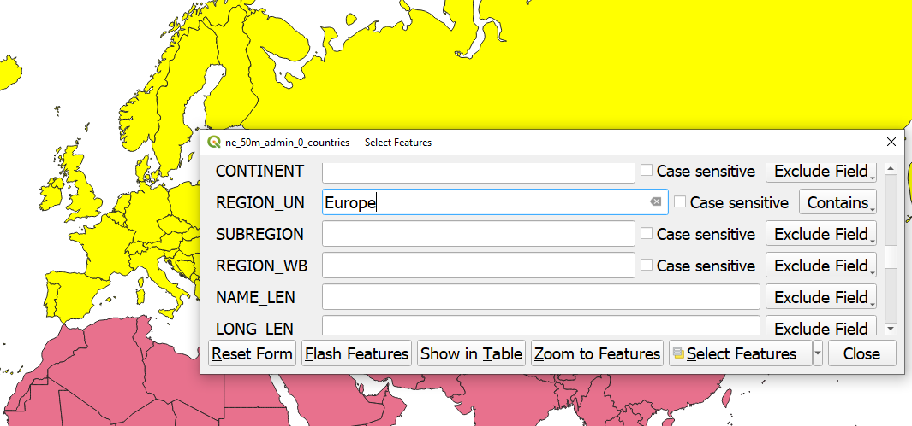
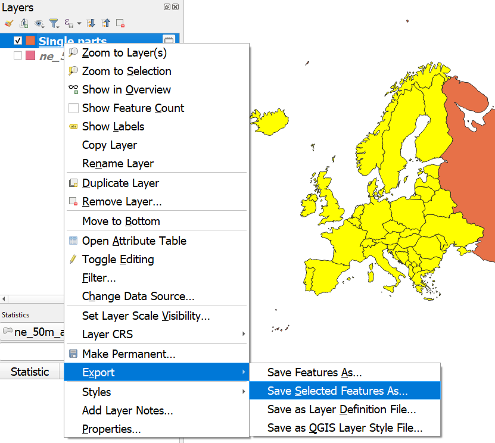

Praktikum 6 Avaandmed ja repositooriumid. Andmekihtide ühendamine
6.1 Avaandmed
Avaandmed (Open Data) on vabalt ja avalikult kättesaadavad andmed. Avaandmeid võib ilma piiranguteta alla laadida, kasutada ja levitada, juhul kui andmeid kasutatakse vastavalt litsentsitingimustele. Avaandmete mõiste on selgelt defineerituna kasutusel olnud kümmekond aastat ning on eriti viimastel aastatel tihedalt seotud survega avalikule sektorile teha oma andmed või osa nendest juurdepääsupiiranguta kättesaadavaks.
)](imgs/8_opendatatypes.png)
Joonis 6.1: Avaandmete liike (Open Knowledge Foundation)
Avaandmetele lähedane mõiste, mis on eeskätt kasutuses teadusandmete kontekstis, on FAIR-andmed ehk andmed, mis on leitavad (findable), kättesaadavad (accessible), ristkasutatavad (interoperable) ja taaskasutatavad (reusable). FAIR-andmed ei ole tingimata kättesaadavad kõikidele ja mis tahes tingimustel, ent järgivad andmete kvaliteedi tagamise põhimõtteid, on paremini dokumenteeritud ning hõlpsamini taaskasutatavad.

Joonis 6.2: FAIR põhimõtted
- Andmete leitavusele aitab näiteks kaasa see, kui andmed on masinloetaval kujul, nad on kirjeldatud metainfo kaudu, varustatud märksõnadega ja neil on püsiidentifikaator DOI (Digital Object Identifier).
- Kui andmeid (või osa nendest) hoitakse mingis avalikus repositooriumis ehk elektroonilises andmehoidlas, kust neid on võimalik alla laadida, on need hästi kättesaadavad.
- Kui andmete vorming vastab mingitele kokkulepitud standarditele või andmeid hoitakse lihtsalt laialt kasutusel olevas, platvormist sõltumatus vormingus (nt CSV, XML), on need ka hõlpsasti ristkasutatavad.
- Kui andmete kogumise ja töötlemise protsess on põhjalikult dokumenteeritud ning andmed on varustatud litsentsiga, on need ka taaskasutatavad.
Eesti avaliku sektori avaandmed on tehtud kättesaadavaks Eesti Avaandmete Portaalis. Ka enamikul ELi liikmesriikidel on oma avaliku sektori avaandmete portaalid.
Suuremad rahvusvahelised teadusandmete repositooriumid on näiteks Zenodo, Harvard Dataverse (vaata ka teisi Dataverse’i projekte), OSF ja Figshare. Repositooriume võib omakorda otsida erinevatest registritest, nagu Re3data.org või OpenAIRE.
Tartu Ülikool pakub TÜ raamatukogu kaudu võimalust säilitada oma teadusandmeid DataDOI repositooriumis. Seal saavad andmed endale digitaalobjekti identifikaatori ehk DOI ning need registreeritakse koos metaandmetega rahvusvahelises DataCite registris. DataCite Eesti koondab ka teisi Eesti teadusega seotud repositooriume, nt Eesti geokogude portaal. Raamatukogul on ka ülevaade enimlevinud avatud juurdepääsuga andmebaasidest ning teaduse avaandmete repositooriumidest ja registritest.
Kui tahta oma andmeid avalikustada, tuleks nendele lisada litsents, mis määrab ära intellektuaalse omandi kasutusõiguse. Tüüpilised avaandmete litsentsid on:
| Litsents | Valdkond | Tuleb viidata | Tohib levitada ainult sarnase litsentsiga |
|---|---|---|---|
| CC0 | Sisu, andmed | Ei | Ei |
| PDDL | Andmed | Ei | Ei |
| CC-BY | Sisu, andmed | Jah | Ei |
| ODC-BY | Andmed | Jah | Ei |
| CC-BY-SA | Sisu, andmed | Jah | Jah |
| ODbL | Andmed | Jah | Jah |
6.2 Eesti ruumiandmed
6.2.1 Maa-ameti geoportaal
Eesti ruumiandmete peamine haldaja ja levitaja on Maa-amet. Alates 2018. aasta suvest on väga suur osa Maa-ameti andmeid avalikud ning allalaetavad lehelt https://geoportaal.maaamet.ee/. Nende kasutamist käsitleb Maa-ameti avatud ruumiandmete litsents.
Peamised punktid:
- Õigus kasutada andmeid tasuta, kasutaja valitud kõlbelisel eesmärgil, kooskõlas seaduste ja heade tavadega.
- Andmete publitseerimisel ja levitamisel peab viitama nende päritolule.
- Maa-amet ei vastuta otsese ega kaudse kahju eest, mis võib tekkida andmete kasutamisest tulenevalt.
Maa-ameti kaudu on vabalt kasutatavad ka ajaloolise haldusjaotuse andmed, sh mõisate, kihelkondade, valdade, rajoonide kohta. Andmete kasutamisel tutvu kindlasti ka viitamistingimustega.
6.2.2 Statistikaamet
Statistikaamet pakub avalikke andmeid sageli seotult mingite haldusüksuste andmetega (nt maakonnapõhiselt). Varasemalt pakkus statistikaamet ka kaardirakendust, mis võimaldas teha nende andmebaasi põhjal teemakaarte ja ka vastavaid andmeid ruumiandmetena alla laadida. 2023. aasta suvel aga rakendus suleti, kuna selle aluseks olev tehnoloogia oli vananenud.
Joonis 6.3: Murdekõnelejad statistikaameti kaardirakenduse teemakaardil (2022)
6.2.3 Muu
- Eesti geoportaal koondab avalik-õiguslike asutuste ruumiandmeid ja nendega seotud metainfot. On seotud EL-i INSPIRE portaaliga (vt muude riikide ruumiandmete jaotist). Viited on koondatud kategooriate kaupa ruumiandmete kataloogi.
- Ruumiandmeid leiab mingil määral Eesti Avaandmete Portaalist, sh Maa-ameti ja Statistikaameti andmeid, aga ka näiteks kohalike omavalitsuste, registrite, ametite jt avaliku sektori institutsioonide andmeid.
- Tallinna ruumiandmed - Tallinna linna aluskaart, hooned, asumipiirid jpm.
- Tartu linna ruumiandmed.
- Digiteeritud kaarte leiab näiteks Rahvusarhiivi kaartide infosüsteemist ja Digarist.
- Nii Eesti kui ka välisriikide praeguseid ja endiseid nimekujusid leiab nii Eesti Keele Instituudi Kohanimeraamatust kui ka Kohanimeandmebaasist. Mõlema puhul on võimalik näiteks teadustöö eesmärgil saada enda kasutusse ka lähteandmeid (või osa nendest). Ametlikku kohanimeregistrit, mis esitab kohanimede ametliku, standardse nimekuju, haldab Maa-amet.
- Arheoloogilise ja pärimusliku kohainfo andmebaas: ei ole avatud juurdepääsuga. Riina Juuriku poole pöördudes saab juurdepääsu aga küsida.
- TARA (Tartu Ülikooli arheoloogia infosüsteem): leidude, luude, proovide, arhiivi, fotode jms kogud.
- Andrus Saareste “Eesti murdeatlase” (1938/1941) ja “Väikese eesti murdeatlase” (1955) andmed, käsikirjalisi murdekaarte saab vaadata siin.
6.3 Muude riikide ruumiandmed
Juurdepääsupiiranguta ruumiandmeid leiab internetist otsides hulganisti. Täpsed ruumiandmed on leitavad sageli huvipakkuva riigi enda avaandmete portaalidest. Siin on toodud vaid mõned üksikud näited üldisematest andmebaasidest ja repositooriumidest:
- INSPIRE on Euroopa Liidu ruumiandmete infrastruktuur, mis koondab ELi liikmesriikide ja EFTA riikide ruumiandmeid (sh Eesti andmeid).
- Natural Earth Data: vektorkujul rannajooned, maa, ookeanid, saared, jõed, järved jm. Olemas ka rasterandmeid aluskaartide jaoks.
- GADM: Maailma riikide halduspiiride vektorandmed ja valmiskaardid (leht sisaldab palju reklaami).
- Open Maps for Europe.
- DIVA-GIS: nii ülemaailmsed kui ka üksikute riikide ruumiandmed.
- Geofabrik: OpenStreetMapi aluseks olevad andmekihid (SHP-formaadis andmed tasulised).
- MapTiler: erinevad maailma vektor- ja rasterpaanid (põhiliselt aluskaartide jaoks).
- Robin Wilsoni põhjalik nimekiri vabalt kasutatavatest ruumiandmetest.
- Ajalooliste kaartide kollektsioon.
- David Rumsey kaardikollektsioon: üle 100 000 kõrge kvaliteediga digiteeritud kaardi 16.-21. sajandist, osa ka georefereeritud.
- Georefereeritud kaardid Map Warperis.
- Arheoloogia andmete suurimaks koondajaks on Ariadne Plus, mis koondab üle 2 miljoni andmestiku kogu Euroopast. Projekti eesmärk on luua pilvepõhine virtuaalne teadustöö tegemise keskkond.
- ADS (Archaeology Data Sercive): juhtiv repositoorium arheoloogia ja laiemalt kogu pärandi andmete pikaajaliseks säilitamiseks ja jagamiseks.
- tDAR (The Digital Archaeology Record): rahvusvaheline arheoloogiliste uuringute andmete repositoorium.
- DANS (Data Archiving and Networked Services): Madalmaade digiandmete repositoorium.
- Pleiades - ajalooliste kohtade, riikide ja nimede ruumiandmed.
- Geographical database of the Uralic Languages - Uurali keelte (sh murrete) polügoonid ja punktandmed.
- Eri riikide tuntud inimeste kohta Vikipeediast kogutud andmebaas, mis on aluseks sellele rakendusele.
Geoinfoga varustatud andmeid leiab ka mitmesugustelt üldistelt lehekülgedelt ja platvormidelt, nt Twitterist/X-ist või Flickrist, mis võimaldavad andmeid koguda oma API (Application Programming Interface) abil.
Joonis 6.4: Näide Flickrist kogutud andmete visualiseerimisest (Postimees, 25. september 2021)
6.3.1 Harjutus
- Laadime Natural Earth Data lehelt alla maailma riikide polügoonide vektorandmed, mõõtkavaga 1:50 000 000 (
Downloads → Medium scale data → Cultural → Admin 0 - Countries). Pakime allalaaditud faili lahti ning loeme SHP-faili QGISi (kasutame projekti CRSina veebi-Mercatori CRS-i EPSG:3857).
- Vaatame kihi atribuuttabelit. Kuidas on väljendatud halduslikke vaidluskohti (vt nt Iisrael)?
- Valime kihilt ainult Euroopa riigid. Selleks saame kasutada valiku tööriistu.

Joonis 6.5: Valimise tööriistad menüüribal
Objektide valimiseks teeme esmalt aktiivseks kihi, millelt valik teha. Valikut saab teha käsitsi või avaldiste abil. Valitud elemendid muutuvad vaikimisi kollaseks (värvi saab sätetes ka muuta).
Valiku tööriistad:
- Select Features by Area or Single Click

- Select Feature(s): vali elemendid nendel hiirega klikkides, mitme elemendi korraga valimiseks hoia all Ctrl-klahvi;
- Select Features by Polygon: joonista hiirega polügoon, mille sisse jäävad elemendid valitakse, valiku lõpetamiseks tee paremklikk;
- Select Features by Freehand: joonista vabakäega mis tahes kujund, mille sisse jäävad elemendid valitakse, valiku lõpetamiseks tee uuesti vasakklikk;
- Select Features by Radius: vali elemendid, mis jäävad teatud raadiuse kaugusele määratud keskpunktist, keskpunkti määramiseks tee kuskil vasakklikk, valiku lõpetamiseks tee uuesti vasakkklikk;
- Select Feature(s): vali elemendid nendel hiirega klikkides, mitme elemendi korraga valimiseks hoia all Ctrl-klahvi;
- Select Features by Value

- Select Features by Value: vali elemendid, mille atribuuttabeli mingite tunnuste väärtused vastavad mingitele määratud väärtustele;
- Select Features by Expression: vali elemendid, mis vastavad avaldisega määratud tingimusele;
- Select All Features: vali kõik kihi elemendid;
- Invert Feature Selection: tee valik vastupidiseks (kõik valitud ehk kollased elemendid muutuvad mittekollaseks ja kõik mittekollased muutuvad kollaseks ehk valituks);
- Select Features by Value: vali elemendid, mille atribuuttabeli mingite tunnuste väärtused vastavad mingitele määratud väärtustele;
- Deselect Features from All Layers

- Deselect Features from All Layers: tühista valikud kõikidelt kihtidelt;
- Deselect Features from the Current Active Layer: tühista valikud ainult aktiivselt kihilt;
- Deselect Features from All Layers: tühista valikud kõikidelt kihtidelt;
- Select by Location: vali elemendid, mis vastavad mingile geomeetrilise suhte määratlusele (nt vali kõik polügoonid, mis osaliselt kattuvad mingi teise polügooniga). NB! Ei tööta, kui kiht on vigane!

Kõik valiku töööriistad leiad ka ülamenüüst: Edit → Select.
Võiksime põhimõtteliselt kasutada tavalist Select Feature(s) valiku tööriista ja kõik Euroopa riigid Ctrl-klahvi all hoides järjest hiirega läbi klõpsida. Lihtsam on aga kasutada tööriista Select Features by Value (kiirklahv F3) ning valida automaatselt kõik need polügoonid, mille tulba REGION_UN väärtus on Europe.

Seejärel võime Ctrl-klahvi all hoides ja Select Feature(s) tööriista kasutades valikust välja jätta alad, mida Euroopa kaardile ei taha jätta (nt Venemaa). Maailma riikide andmestiku puhul on tegemist multipolügoonidega, mistõttu tulevad Euroopa riike valides kaasa ka meretagused (koloniaal)alad. Kui tahaksime neid andmetest välja jätta, peaksime lahutama mitmikpolügoonid eraldi polügoonideks (Vector → Geometry Tools → Multipart to Singleparts, linnuta valik Selected features only). Tekib uus kiht (vaikimisi nimega Single parts), millelt saame seejärel uuesti valida nüüd ainult need polügoonid, mida tahame oma Euroopa kaardile jätta (nt tööriistaga Select Features by Polygon). Valitud riigid saame salvestada omaette Euroopa vektorkihina, kui teeme kihil paremkliki ning valime Export → Save Selected Features As.

6.4 Andmestike ühendamine
Andmestike ühendamiseks on QGISis mitu erinevat viisi.
6.4.1 Ühendamine ühise tunnuse järgi
Kui ühendame ruumiandmeid ja mitteruumiandmeid, saame kasutada mõlema andmestiku kattuva sisuga tulpasid. Näiteks võib meil olla olemas andmestik, milles ruumilist infot väljendavad ainult mingid tekstilised tunnused (riikide, maakondade, linnade, talude vm nimed). Nende tunnuste abil saame ühendada andmed avalikult ja vabalt kättesaadavate ruumiandmetega (nt Maa-ameti ruumiandmetega).
Uurime, kuidas on maakondades 2021. aasta rahvaloenduse põhjal rahvaarv 2011. aasta andmetega võrreldes protsentuaalselt muutunud.
- Laadime QGISi Maa-ameti maakonnapiiride vektorkihi ja Moodle’is oleva CSV-andmestiku statistikaameti rahvaloenduse andmetega (NB! Statistikaameti andmetes ei ole koordinaate ->
No geometry).
- Ühendame maakondade vektorkihiga (!) statistikaameti rahvaloenduse andmed (ühine tulp on mõlemas andmestikus see, kus on maakondade nimed).
- Vaatame andmekihtide atribuuttabelitest, kas maakondade nimed on samal kujul.
- Teeme maakondade vektorkihil topeltkliki ning valime avanenud aknas vasakult jaotise
Joins. Rohelisest plussmärgist lisame uue ühenduse (Add new join).
- Ühendatav kiht (
Join layer) on meie rahvaloenduse andmete kiht, mille ühendamise jaoks kasutatav tulp (Join field) on tulp Elukoht. See tulp vastab ruumiandmete kihil tulbale MNIMI (Target field).
- Kuna elukoha ja maakonna nime tulba sisu kattub, ei ole mõlemat vaja ühendatud andmestikus alles hoida (
Joined fields). Samuti ei taha me, et iga ruumiandmete kihile lisatava tulba nime ees oleks omakorda veel ühendatava kihi nimi (Custom field name prefix).
- Vaatame andmekihtide atribuuttabelitest, kas maakondade nimed on samal kujul.
Joonis 6.6: Mitteruumiandmete ühendamine ruumiandmetega
Nüüd on maakondade vektorkihi atribuuttabelis ka rahvaloenduse andmed, mida saame edasi kaardil visualiseerida. Kui eelmisel korral vaatasime, kuidas kujundada kõiki kihi objekte (features) ühesuguselt (Symbology → Single symbol), siis nüüd tahame, et maakonnad oleksid värvitud erinevalt, vastavalt sellele, kas ja kui palju seal rahvaarv kasvas või kahanes.
Praeguses atribuuttabelis on lihtsalt 2011. ja 2021. aasta rahvaarv, meil aga oleks vaja näidata muutust. Mugav viis selleks oleks teha atribuuttabelisse lihtsalt uus tulp, kus 2021. aasta rahvaarvust oleks lahutatud 2011. aasta rahvaarv. Kui rahvaarv kasvas, siis on väärtus positiivne; kui kahanes, siis negatiivne. Uue tulba lisamiseks avame maakondade vektorkihi atribuuttabeli (kiirklahv F6 või paremklikk ja Open Attribute Table) ning võtame lahti tööriista Field Calculator (kiirklahv Ctrl+I).  .
.
Joonis 6.7: Uue tulba lisamine atribuuttabelisse
Uue tulba lisamine viib meie vektorkihi automaatselt muutmisrežiimi. Sellele viitab ka see, et atribuuttabeli ülamenüüs läheb aktiivseks kollane pliiats. Pliiatsil klõpsates saab muutmisrežiimi sisse ja välja lülitada. Selleks, et enda loodud tulp kihile salvestada ja muutmisrežiimist väljuda, peame pliiatsil nüüd uuesti klõpsama.
Lisame ka protsentuaalse muutuse tulba MuutusProp, kus kajastame muutust protsentuaalselt ehk jagame tulba (Field) Muutus väärtused läbi 2011. aasta rahvaarvuga (Field 2011 Vanuserühmad kokku) ja korrutame saadud tulemuse 100ga. Kuna siin lubame arvudes ka komakohti, on Output field type sedapuhku mitte Integer, vaid Decimal number (real).
Lõpuks värvime maakonnad vastavalt protsentuaalse muutuse suunale ja suurusele. Selleks teeme maakondade vektorkihil topeltkliki ja liigume jaotisse Symbology. Single Symbol asemel valime väärtuse Graduated, mis võimaldab vektorkihi objekte (nt maakondade polügoone) kujundada vastavalt mingile arvulisele tunnusele kihi atribuuttabelis. Praegusel juhul on selleks tunnuseks (Value) loodud tunnus MuutusProp. Arvulise tunnuse alusel jagatakse vaatlused sagedusklassidesse. Klasside arvu saab muuta, samuti on klasside tekitamiseks erinevad meetodid:
Equal Count (Quantile)- igasse sagedusklassi määratakse (enam-vähem) võrdne arv objekte
Equal Interval- kõik sagedusklassid on sama suure intervalliga (nt 1-3, 4-6, 7-9 jne), intervalli suuruse määrab klasside arv
Fixed Interval- kõik sagedusklassid on sama suure intervalliga, intervalli suuruse määrab kasutaja
Logarithmic Scale- rohkem tuuakse esile erinevusi väikeste väärtuste vahel
Natural Breaks (Jenks)- sagedusklasse luuakse nii, et sama klassi väärtused oleksid üksteisega võimalikult sarnased ja teistest klassidest võimalikult erinevad
Pretty Breaks- kõik sagedusklassid on enam-vähem sama suure intervalliga, klassi piiridena kasutatakse lihtsaid, ümardatud väärtusi, mistõttu vähima ja suurima sagedusklassi intervall võib teistest erineda
Standard Deviation- võrdsete intervallidega sagedusklassid, intervallid põhinevad standardhälbel (näitab, kui palju mingi arvuline väärtus erineb keskmisest)
Selles ülesandes võiks üks klass võimalusel väljendada kuni 5 protsendipunkti muutust (pretty breaks). Valime sellise värviskaala (nt PRGn või RdBu), mis väljendaks skaala kumbagi äärmist otsa (suuri kasvuprotsente ja suuri kahanemisprotsente) eri värvidega.
Joonis 6.8: Maakondade värvimine vastavalt protsentuaalsele muutusele rahvaarvus
Salvestame kaardi pildifailina. Lisame kaardile ka pealkirja, legendi ja viite kasutatud andmetele.
Veidi paindlikumaid võimalusi ruumiandmete ja mitteruumiandmete ühendamiseks pakub Processing → Toolbox → Vector general → Join attributes by field value. Näiteks kui on vaja ruumiandmete koordinaate määrata mitmele sama atribuudi väärtust omavale objektile korraga (nt andmestikus on mitu Harju maakonna vaatlust), saame kasutada seal ühendamisviisi one-to-many.
6.4.2 Geokodeerimine
Täpsemate asukohtade määramiseks (nt aadresside jaoks) saab kasutada geokodeerimise teenust. Geokodeerimine on aadressi või kohanime seostamine geograafiliste koordinaatidega. Tagurpidi geokodeerimine omakorda võimaldab koordinaatidest tuletada aadressid ja kohanimed.
QGISis on sisse-ehitatud geokodeerija, mis annab ka tänapäevaste andemetega küllaltki häid tulemusi: Processing → Toolbox → Vector general → Batch Nominatim geocoder.
Ka Maa-amet pakub tasuta geokodeerimise teenust. Sealjuures on võimalik geokodeerida nii ainult üht aadressi/kohta korraga kui ka tervet hulka andmeid (massgeokodeerimine).
Massgeokodeerimise sisendiks sobivad CSV- või XLSX-formaadis andmetabelid. CSV-formaadi puhul peab välju eraldama semikoolon. Vaatame seda lühikese näite abil, kus geokodeerime Tartu Ülikooli valdkondade dekanaatide ametlikud aadressid.
- Kodeerimisel peab ära määrama, millises tulbas paikneb sisendaadress, mida geokodeerima hakatakse. Antud juhul on selleks tulp aadress.
- Seejärel saab valida mh,
- milliste objektide hulgast vasteid otsitakse. Meid huvitavad siin eeskätt õppehooned, aga veidi ebatäpsemate aadresside puhul (talud, tänavad, maakonnad, linnad jne) tasub otsida ka teiste objektide seast;
- kuidas vasteid esitatakse. Eeskätt puudutab see aadresse, millel on kas mitu vastet või millele täpset vastet ei leita.
- milliste objektide hulgast vasteid otsitakse. Meid huvitavad siin eeskätt õppehooned, aga veidi ebatäpsemate aadresside puhul (talud, tänavad, maakonnad, linnad jne) tasub otsida ka teiste objektide seast;
- Lõpuks saab valida,
- milliseid ruumiandmete tulpasid väljundisse soovime (nt kas kõiki aadressiobjektide id-sid ja tasemeid);
- kas tahame, et andmeid töödeldaks sünkroonselt, mispuhul saame protsessi jälgida kohe samas veebilehitseja aknas, või asünkroonselt, mispuhul andmed laetakse serverisse ning kasutajale saadetakse mõne aja pärast tulemus meilile. Viimast tasub teha eeskätt siis, kui andmestik on mahukas.
- milliseid ruumiandmete tulpasid väljundisse soovime (nt kas kõiki aadressiobjektide id-sid ja tasemeid);
Geokodeerimine töötab väga hästi tänapäevaste aadressidega.
Vaatame aga nüüd ka natuke vanemaid andmeid, nimelt Rahvusarhiivi kaudu kasutatavat Tartu Ülikooli ja Eesti Ajalooarhiivi andmebaasi “Album Academicum 1918–1944”, mis koondab matrikliraamatutele jt allikatele tuginedes infot Tartu Ülikooli immatrikuleeritud üliõpilastest aastatel 1918-1944 (vaata lähemalt). Kuna andmestik ise on üpris mahukas, sisaldades infot enam kui 20 000 tudengi kohta, siis vaatame siin ainult Pärna-, Pähna-, Lõhmuse- ja Niine-nimeliste üliõpilaste andmeid ning võrdleme nende päritolu. Tahame teada, kas eri perekonnanimedega üliõpilaste sünnikohad korreleeruvad perekonnanimes oleva sõna levikualaga murretes. Naisüliõpilaste andmete puhul ei pruugi võrdlus olla väga täpne, kuna andmestikus sisalduvad ka need kirjed, kus perekonnanimi on saadud abiellumisel.
Joonis 6.9: Sõnade levik murretes (Väike murdesõnastik)
Oleme veidi algandmestikku täiendanud ning lisanud standardiseeritud sünnikoha tulbad, kus andmebaasis kajastatud sünnikohtadel on lühendid lahti kirjutatud ning erinevate tasemete kohanimed on lahku löödud.
Põhimõtteliselt võib proovida ka praktikumis tabelit massgeokodeerimisse saata (sel juhul tasub otsida ilmselt ainult haldus- ja asustusjaotuse klassifikaatorist), ent kui teeme seda kõik koos, võib server saada üle koormatud. Seepärast oleme lisanud praktikumi materjalidesse ka juba geokodeeritud faili parn_niin_lohmus_pahn.gpkg, mis kasutas aadressidena tulpa Sünnikoht, kus on kogu sünnikoha täiskirje, ning lisasammudena tulpasid tase3, tase2 ja tase1, milles sünnikoha info erinevad tasemed olid lahku löödud (kõige spetsiifilisem kohanimi tulbas tase3). Otsitud on maakonna/omavalitsuse/asustusüksuse/linnaosa objekte.
- Laadime geokodeeritud andmestiku QGISi.
- Valime andmetele sobiva aluskaardi (nt eelmisel korral kasutatud kihelkondade kaardi).
- Värvime punktid selle järgi, kas tegemist on Pärna-, Pähna-, Lõhmuse- või Niine-nimeliste üliõpilastega (tulp
pk). Selleks teeme vektorkihil topeltkliki ja liigume jaotisseSymbology.Single Symbolasemel valime väärtuseCategorized, mis võimaldab vektorkihi objekte (nt maakondade polügoone) kujundada vastavalt mingile kategoriaalsele/tekstilisele tunnusele kihi atribuuttabelis. Praegusel juhul on selleks tunnuseks (Value) loodud tunnus pk. Vajutame nupulClassify.
- Teeme punkte suuremaks, viime punktide läbipaistvuse 50% peale, vahetame soovi korral punktide värvi ja sümboleid.
6.4.3 Ühendamine ruumiinfo järgi
Kui kasutada on näiteks kaks vektorkihti, mis mõlemad sisaldavad ka ruumiandmeid, saame ühendada neid ka ilma ühise atribuudita, koordinaatide põhjal.
Loeme sisse eelmisel korral kasutatud kohapärimuse punktikihi ja ajalooliste kihelkonnapiiride polügoonikihi. Oletame, et tahame värvida eri värvi neid kihelkondi, kust meil kohapärimuse andmeid on. Vaatame kihtide atribuuttabeleid. Mõlemal kihil on olemas kihelkonnanimedega tulp ning info näib olevat samal kujul. Seega võiksime põhimõtteliselt ühendada punktikihi kihelkondade kihiga ning teha värviliseks ainult need kihelkonnad, kust kohapärimuse kihilt tulevates tulpades midagi on.Joonis 6.10: Kihelkondade värvimine vastavalt kohapärimusele
Kui aga tahame värvida kihelkondi selle järgi, kui palju kuskilt kihelkonnast kohapärimuse andmeid on, jääksime siin hätta, kuna kihelkonnakihil on iga kihelkonna kohta ainult üks rida, meil võib aga ühest ja samast kihelkonnast olla mitu pärimusjuttu. Siin saame kasutada valikut Processing → Toolbox → Vector general → Join attributes by location (summary).
Siin kohtame taas geomeetrilisi predikaate.
- equals - kahel objektil täpselt samad koordinaadid
- intersects - kaks objekti katavad vähemalt mingeid ühiseid koordinaate (sh nt servi)
- crosses - kaks objekti lõikuvad nii, et lõikumiskoht on madalama dimensionaalsusega kui objektid ise
- overlap - kaks objekti katavad mingeid ühiseid koordinaate, aga ei ole täpselt ühesugused, kohakuti ega ainult servapunktidest kattuvad
- touches - kaks objekti puutuvad kokku ainult servadest, aga objektide siseosa ei kattu
- within - esimene objekt tervenisti teise sees
- contains - teine objekt tervenisti esimese sees
Kasutame geomeetrilist predikaati contains, sest tahame teada, millised punktid jäävad iga kihelkonna polügooni sisse (võivad ka polügooni sisemise piiriga külgneda) ja teame, et kõik punktid jäävad Eesti riigi maakondade piiridesse. Samuti võime igaks juhuks märkida meetodina ära intersects, juhuks kui mõni punkt asub täpselt maakondade polügoonide piiril.
Joonis 6.11: Kohapärimuse punktide kokkulugemine kihelkonnapiirides
Kuna vektorkihi geomeetria on vigane, saame veateate. Võime kihi ära parandada (Processing → Toolbox → Vector geometry → Fix geometries) või valida ühendamise aknas alt vasakult nurgast Advanced → Algorithm Settings → Invalid feature filtering ja määrata väärtuseks Skip (Ignore) Features with Invalid Geometries. Viimasel juhul jäetakse vigased polügoonid uuelt loodavalt kihilt välja.
Ühendamise käigus tekkinud kihil võime nüüd polügoonid värvida kas tulba NIMETUS_count järgi, kui tahame näidata lihtsalt, kui palju tekste/helisalvestisi/videoid mingist kihelkonnast oli (kõik Pühajõest rääkivad tekstid loetakse eraldi kokku), või NIMETUS_unique, kui tahame näidata, mitmest unikaalsest objektist räägiti (Pühajõgi läheb arvesse ainult ühe korra). Kasutame Graduated visualiseerimist.
Selleks, et näha jääksid ka kihelkonnad, kust ühtegi punkti ei ole (e kus tulpades on väärtus NULL), peame pärast sagedusklasside moodustamist lisama eraldi klassi ka nendele juhtumitele. Valime Graduated asemel Rule-based, lisame rohelisest plussmärgist uue reegli, mille sildiks määrame 0 ning reegli kirjutamise asemel valime lihtsalt valiku Else.

Joonis 6.12: Reegli lisamine kujundamisel